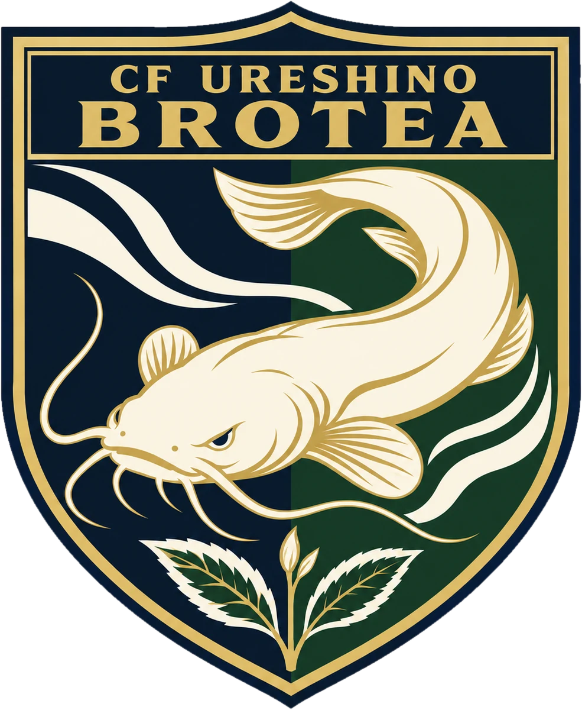

FILOSOFÍAクラブ理念
CONCEPTOクラブコンセプト
FILOSOFÍA基本理念
「選手ファースト」
当クラブは、「選手ファースト」を基本理念とし、一人ひとりの個性と意思を尊重し、心身の健やかな成長と将来の可能性を大切にします。選手との対話を重ね、安心して自分の考えを表現し、失敗を恐れず挑戦できる環境を整えます。
サッカーの技術や戦術の向上を図るとともに、自ら状況を捉え、考え、判断し、行動する力を育みます。勝利を目指して仲間と真剣に取り組み、挑戦や失敗から学ぶ過程を大切にしながら、中学年代の先を見据え、自ら成長を続ける選手の育成を目指します。
また、仲間や対戦相手、審判、指導者、家族をはじめ、活動を支える人々への敬意と感謝を大切にします。地域に根ざした活動を通じて、人とのつながりや互いに協力する姿勢を育み、サッカーで得た学びを日々の生活や将来に生かし、社会の一員として主体的に歩む青少年の育成に努めます。
NUESTRA VISIÓN目指す育成
嬉野の茶畑に芽吹く新芽のように、一人ひとりが持つ可能性を大切に育み、自分らしく未来へ伸びていく。CF嬉野BROTEAは、嬉野に根ざすクラブとして、「選手ファースト」を理念に、選手の成長に寄り添います。
私たちが大切にするのは、自ら考え、状況を捉え、判断し、創造性を持ってプレーすることです。確かな足元の技術に加え、周囲を観る力、状況を理解する力、身体を効果的に使う力を養い、その場に適したプレーを自ら選び、実行できる選手を育てます。そして、仲間と考えを共有し、互いの持ち味を生かしながら、自分たちで試合を動かし、主導権を握るサッカーを目指します。
一人ひとりの個性や成長の歩みを尊重し、選手自身の考えや思いに耳を傾けます。安心して意見を伝え、失敗を恐れず挑戦し、その経験から学べる環境を整え、選手が自ら成長していく力を支えます。
育成年代における指導者との出会いや日々の環境を大切にし、私たち指導者も学び続けます。スタッフ間で日常的にトレーニングや選手の成長について議論し、指導を振り返りながら、一人ひとりにとってより良い関わり方を追求していきます。
また、嬉野でサッカーができる喜びと、活動を支えてくださる方々への感謝を大切にします。仲間や対戦相手、審判、家族、地域の方々への敬意を育み、サッカーを通じて、人と協力することや自分の役割を果たすことを学びます。選手たちが嬉野とのつながりを感じ、この地域で育つことに誇りを持てるクラブを目指します。
私たちの育成は、ジュニアユースの3年間の先を見据えています。選手一人ひとりが、その先のカテゴリーでも自分らしくサッカーを続けられるよう、技術・戦術・身体・人間性の成長を支え、高校年代への進路についても、本人の希望を大切にしながら可能な限りサポートします。
嬉野で仲間とともに学び、挑戦する3年間を、自分で観て、考え、判断し、行動する力へ。サッカーで育んだ力を、その先の競技生活や人生へつなげていけるよう、地域とともに選手一人ひとりの未来を支えていきます。
NOMBREクラブ名の由来
- BROTE新芽（スペイン語）
- CREAR創造する（スペイン語）
- TEAお茶（英語）
クラブ名「CF嬉野BROTEA」は、スペイン語の「brote（新芽）」と「crear（創造する）」、そして嬉野の特産品であるお茶を表す英語の「tea」を組み合わせた造語です。
嬉野の茶畑に芽吹く新芽のように、選手一人ひとりが持つ個性と可能性を大切にし、それぞれの成長に寄り添いながら、未来へ伸びていく力を育みたいと考えています。また、自ら考え、挑戦し、仲間とともに新たな価値や未来を創造できる選手へと成長してほしいという願いを込めています。
嬉野のお茶文化と地域の人々とのつながりを大切にし、この地に根ざし、地域とともに成長していくクラブを目指します。
ESCUDOエンブレム

- 白なまず
嬉野市の豊玉姫神社に祀られる、美肌の神様の使い「白なまず様」。
- 茶の新芽
嬉野茶の新芽。嬉野の土地から、新芽のように大きく成長してほしいという願い。
- 湯けむり
日本三大美肌の湯のひとつ、嬉野温泉。
- 緑の盾
嬉野の茶畑。
DATOSクラブデータ
- クラブ名
- CF嬉野BROTEA
- 正式表記
- Club de Fútbol 嬉野 Brotea
- 呼称
- ブロテア
- 創立
- 2026年11月
- 活動地域
- 佐賀県嬉野市嬉野町・
西松浦郡有田町 - クラブカラー
- 緑・紫・白
- 種目
- サッカー・フットサル